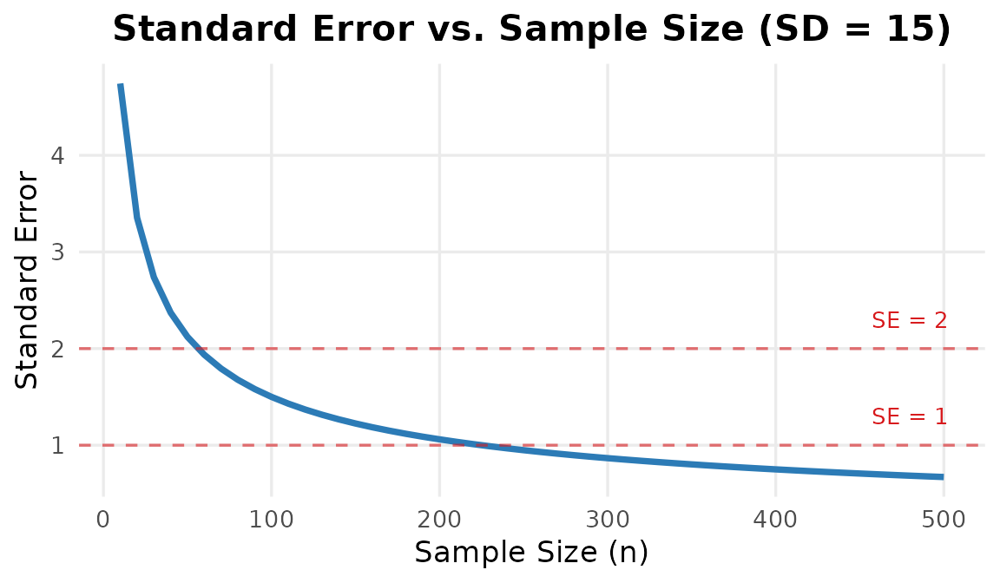
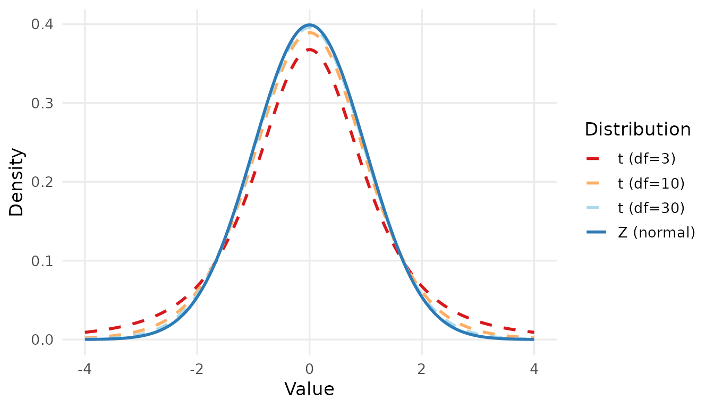
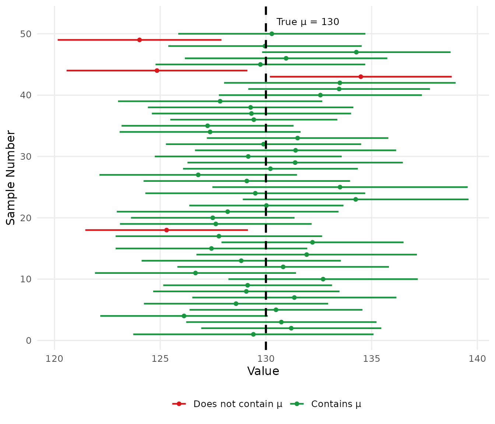

| Confidence Level | alpha | 1 - alpha/2 (left area) | z(1-alpha/2) |
|---|---|---|---|
| 90% | 0.10 | 0.950 | 1.645 |
| 95% | 0.05 | 0.975 | 1.960 |
| 99% | 0.01 | 0.995 | 2.576 |
Why Does This Matter?
In practice, we almost never have access to an entire population. We collect data from a sample and use it to draw conclusions about the population — a process called statistical inference.
Estimation is one of the two main branches of statistical inference (the other being hypothesis testing, covered in Chapter 5).
In this chapter, we answer questions like:
The key tool for answering these questions is the confidence interval.
There are two ways to estimate a population parameter from sample data:
A point estimate is a single value calculated from the sample that serves as our best guess for the population parameter.
| Population Parameter | Symbol | Point Estimate | Symbol |
|---|---|---|---|
| Population mean | \(\mu\) | Sample mean | \(\bar{x}\) |
| Population proportion | \(p\) | Sample proportion | \(\hat{p}\) |
| Population SD | \(\sigma\) | Sample SD | \(s\) |
A point estimate is simple and easy to communicate, but it gives us no information about how accurate or reliable that single number is.
An interval estimate gives a range of plausible values for the population parameter, along with a stated level of confidence.
\[\text{Point Estimate} \pm \text{Margin of Error}\]
This range is called a confidence interval (CI).
Key Concept: Confidence Level
The confidence level (commonly 90%, 95%, or 99%) tells us:
“If we repeated this study many times and calculated a confidence interval each time, approximately X% of those intervals would contain the true population parameter.”
In health research, 95% confidence is the most widely used standard.
Before constructing a confidence interval, we need to understand the standard error (SE) — a measure of how much the sample estimate varies from sample to sample.
\[SE_{\bar{x}} = \frac{s}{\sqrt{n}}\]
Where \(s\) is the sample standard deviation and \(n\) is the sample size.
\[SE_{\hat{p}} = \sqrt{\frac{\hat{p}(1-\hat{p})}{n}}\]
SE vs. SD — What Is the Difference?
| Standard Deviation (SD) | Standard Error (SE) | |
|---|---|---|
| Describes | Variability of individual observations | Variability of the sample mean |
| Gets smaller with | More homogeneous data | Larger sample size |
| Used for | Describing the spread of data | Constructing confidence intervals |
The SE always gets smaller as \(n\) increases — larger samples give more precise estimates.

Figure 1: As sample size increases, the standard error decreases and estimates become more precise
If the population standard deviation \(\sigma\) is known and either (a) the population is normal, or (b) the sample size is large (\(n \geq 30\)), we use the Z-interval:
\[\bar{x} \pm z_{1-\alpha/2} \cdot \frac{\sigma}{\sqrt{n}}\]
The critical value \(z_{1-\alpha/2}\) is written using the left cumulative probability (the area to the left of the value, matching the standard normal table and SPSS IDF.NORMAL). It depends on the confidence level:
| Confidence Level | alpha | 1 - alpha/2 (left area) | z(1-alpha/2) |
|---|---|---|---|
| 90% | 0.10 | 0.950 | 1.645 |
| 95% | 0.05 | 0.975 | 1.960 |
| 99% | 0.01 | 0.995 | 2.576 |
The Most Used Value
In health research, the 95% CI with \(z_{0.975} = 1.96\) is by far the most commonly reported. You will see it in almost every clinical paper.
In practice, \(\sigma\) is almost never known. When we use the sample SD \(s\) as an estimate, we must use the t-distribution instead of the Z-distribution:
\[\bar{x} \pm t_{1-\alpha/2,\, n-1} \cdot \frac{s}{\sqrt{n}}\]
Where \(t_{1-\alpha/2,\, n-1}\) is the critical value from the t-distribution with \(n - 1\) degrees of freedom (df). As with \(z\), the subscript \(1-\alpha/2\) is the left cumulative probability (e.g., \(0.975\) for a 95% CI).
The t-distribution is similar to the standard normal distribution but has heavier tails — reflecting the extra uncertainty from estimating \(\sigma\) with \(s\). As \(n\) increases, the t-distribution approaches the Z-distribution.

Figure 2: t-distributions with different degrees of freedom compared to Z
| Degrees of Freedom (df = n-1) | t(0.975, df) |
|---|---|
| 5 | 2.571 |
| 10 | 2.228 |
| 15 | 2.131 |
| 20 | 2.086 |
| 25 | 2.060 |
| 30 | 2.042 |
| 40 | 2.021 |
| 60 | 2.000 |
| 120 | 1.980 |
| Inf (Z) | 1.960 |
As df increases, the t critical value converges to 1.960 (the Z value). For \(n \geq 30\), the difference is small and Z is often used as an approximation.
When the outcome of interest is a proportion (e.g., prevalence of a disease, percentage of patients who respond to treatment), we use:
\[\hat{p} \pm z_{1-\alpha/2} \cdot \sqrt{\frac{\hat{p}(1-\hat{p})}{n}}\]
Where \(\hat{p} = \dfrac{x}{n}\) is the sample proportion (\(x\) = number with the characteristic, \(n\) = total sample size).
When Is This Formula Valid?
This formula requires a sufficiently large sample. A common rule of thumb is:
\[n\hat{p} \geq 5 \quad \text{and} \quad n(1-\hat{p}) \geq 5\]
If this condition is not met, special methods are needed (not covered in this course).
Correct Interpretation
“We are 95% confident that the true population mean lies between [lower bound] and [upper bound].”
What this means: If we repeated the sampling process many times, 95% of the resulting confidence intervals would contain the true parameter.
What this does NOT mean: There is NOT a 95% probability that the true parameter lies in this specific interval — the true parameter is fixed; it either is or is not in the interval.

Figure 3: Simulation: 50 confidence intervals from repeated samples. Green intervals contain the true mean (μ = 130); red ones do not.
The figure above shows 50 confidence intervals from 50 different samples of the same population. Most (≈95%) contain the true mean; a few do not — this is expected and not an error.
Chapter 4 Summary
A point estimate gives a single best-guess value for a population parameter; an interval estimate gives a range of plausible values.
A confidence interval (CI) = Point estimate \(\pm\) Margin of error. The margin of error depends on the confidence level, the SE, and the critical value.
Use the Z-interval when \(\sigma\) is known or \(n \geq 30\); use the t-interval when \(\sigma\) is unknown and \(n\) is small, with \(df = n - 1\).
The 95% CI is the standard in health research, using \(z_{0.975} = 1.96\).
A wider CI means less precision; a larger sample size \(n\) always produces a narrower (more precise) CI.
The correct interpretation: “We are 95% confident the true parameter lies within this interval” — not a probability statement about a fixed parameter.
A study measured the fasting blood glucose (mg/dL) of a random sample of 36 adults and found:
\[\bar{x} = 105.4 \text{ mg/dL}, \qquad s = 18.6 \text{ mg/dL}\]
Construct a 95% confidence interval for the population mean blood glucose.
Solution
Given: \(n = 36\), \(\bar{x} = 105.4\), \(s = 18.6\), confidence level = 95%
Step 1 — Standard Error: \[SE = \frac{s}{\sqrt{n}} = \frac{18.6}{\sqrt{36}} = \frac{18.6}{6} = 3.10\]
Step 2 — Critical value:
\(df = n - 1 = 35\). From the t-table at left cumulative probability \(1 - \alpha/2 = 0.975\): \(t_{0.975,\, 35} = 2.030\)
(Since \(n = 36 \geq 30\), we could also use \(z = 1.96\) as an approximation.)
Step 3 — Confidence Interval: \[105.4 \pm 2.030 \times 3.10 = 105.4 \pm 6.29\]
\[\textbf{95\% CI: } (99.1, \; 111.7) \text{ mg/dL}\]
Interpretation: We are 95% confident that the true mean fasting blood glucose of adults in this population is between 99.1 and 111.7 mg/dL.
In a survey of 200 adults, 68 were found to have hypertension.
Construct a 95% confidence interval for the true prevalence of hypertension in this population.
Solution
Given: \(n = 200\), \(x = 68\)
Step 1 — Sample proportion: \[\hat{p} = \frac{68}{200} = 0.34 \quad (34\%)\]
Step 2 — Check validity: \[n\hat{p} = 200 \times 0.34 = 68 \geq 5 \checkmark\] \[n(1-\hat{p}) = 200 \times 0.66 = 132 \geq 5 \checkmark\]
Step 3 — Standard Error: \[SE = \sqrt{\frac{0.34 \times 0.66}{200}} = \sqrt{\frac{0.2244}{200}} = \sqrt{0.001122} = 0.0335\]
Step 4 — Confidence Interval (using \(z_{0.975} = 1.96\)): \[0.34 \pm 1.96 \times 0.0335 = 0.34 \pm 0.066\]
\[\textbf{95\% CI: } (0.274, \; 0.406) \quad \text{or} \quad (27.4\%, \; 40.6\%)\]
Interpretation: We are 95% confident that the true prevalence of hypertension in this population is between 27.4% and 40.6%.
Using the same data as Example 1 (\(\bar{x} = 105.4\), \(s = 18.6\)), compare the 95% CI when \(n = 36\), \(n = 100\), and \(n = 400\).
Solution
| n | SE | Margin of Error | Lower Bound | Upper Bound | CI Width |
|---|---|---|---|---|---|
| 36 | 3.10 | 6.076 | 99.32 | 111.48 | 12.15 |
| 100 | 1.86 | 3.646 | 101.75 | 109.05 | 7.29 |
| 400 | 0.93 | 1.823 | 103.58 | 107.22 | 3.65 |
Conclusion: Quadrupling the sample size (from 100 to 400) halves the CI width — because SE depends on \(\sqrt{n}\), not \(n\) directly. To halve the margin of error, you need to quadruple the sample size.
Exercise 1
A random sample of 25 patients with chronic kidney disease had their serum creatinine levels measured:
\[\bar{x} = 3.82 \text{ mg/dL}, \qquad s = 1.14 \text{ mg/dL}\]
(a) Calculate the standard error of the mean.
(b) Find the appropriate critical value for a 95% CI.
(c) Construct the 95% confidence interval for the population mean serum creatinine level.
(d) Interpret the confidence interval in plain language.
Exercise 2
A hospital records that 45 out of 180 patients discharged last month were readmitted within 30 days.
(a) Calculate the sample proportion of 30-day readmissions.
(b) Check whether the large-sample conditions are satisfied.
(c) Construct a 95% confidence interval for the true 30-day readmission rate.
(d) The hospital’s target readmission rate is 20%. Based on the confidence interval, is there evidence that the true rate differs from this target? Explain.
Exercise 3
A researcher wants to estimate the mean diastolic blood pressure (DBP) of adults in a city. From a pilot study, the SD is estimated to be 12 mmHg.
The researcher wants a 95% CI with a margin of error no greater than 2 mmHg.
Using the formula: \[n = \left(\frac{z_{1-\alpha/2} \cdot \sigma}{E}\right)^2\]
where \(E\) is the desired margin of error, calculate the minimum sample size required.
End of Chapter 4
Coming Up Next
Chapter 5: Statistical Testing — Instead of estimating a parameter, we will test specific claims about populations using hypothesis testing — one of the most powerful tools in health research.